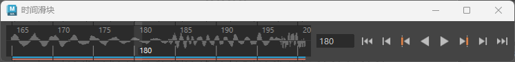

您可以在场景中导入、显示和播放多个声音文件。
注：
“播放速度”(Playback Speed)必须设定为“实时”(Real-time)才能正确播放声音。请参见“动画控件”(Animation Controls)菜单中的“播放速度”(Playback Speed)。
将音频文件加载到场景中
- 执行下列操作之一：
- 在播放选项(Playback options)中的“音量”(Volume)图标
 上单击鼠标右键，然后选择“导入音频”(Import Audio)。在“文件类型”(Files of Type)菜单中设置“音频”(Audio)以过滤支持的音频格式。文件浏览器可用于选择要导入的声音文件的名称。如果文件中嵌入音频偏移，则会显示在“文件类型特定选项”(File Type Specific Options)中。您也可以在此字段中指定偏移。
上单击鼠标右键，然后选择“导入音频”(Import Audio)。在“文件类型”(Files of Type)菜单中设置“音频”(Audio)以过滤支持的音频格式。文件浏览器可用于选择要导入的声音文件的名称。如果文件中嵌入音频偏移，则会显示在“文件类型特定选项”(File Type Specific Options)中。您也可以在此字段中指定偏移。
- 从“动画”(Animation)菜单集 (F4) 中选择
- 从主菜单栏中选择文件 > 导入(File > Import)。文件浏览器可用于选择要导入的声音文件的名称。如果文件中嵌入音频偏移，则会显示在“文件类型特定选项”(File Type Specific Options)中。您也可以在此字段中指定偏移。
- 将文件浏览器中的文件拖动到一个 Maya 建模视图中，或拖动到“时间滑块”(Time Slider)上。

音频波形填充时间滑块
注：声音文件加载到场景后，系统将创建名称与文件名相同的音频节点。该节点引用声音文件位置。如果将声音文件移动到其他位置，请务必更改由音频节点引用的文件名。
- 在播放选项(Playback options)中的“音量”(Volume)图标
- 在时间滑块(Time Slider)上的波形上单击鼠标右键，然后从“动画控件”(Animation controls)菜单中选择“声音”(Sounds)。
- 如果您希望在导入时为您的文件设置播放偏移，请参见导入选项(Import Options)中的“音频偏移”(Audio Offset)设置。您也可以随时在 Maya 中的属性编辑器(Attribute Editor)中为您的文件指定偏移，方法是在波形上单击鼠标右键，然后从“动画控件”(Animation Controls)菜单中选择<soundfile> >
 ，这将在“属性编辑器”(Attribute Editor)打开声音文件的属性。可在“偏移”(Offset)字段中指定要开始播放音频的帧。
，这将在“属性编辑器”(Attribute Editor)打开声音文件的属性。可在“偏移”(Offset)字段中指定要开始播放音频的帧。
声波的峰值在“时间滑块”(Time Slider)中可见，并且“时间滑块”(Time Slider)可以随时播放或拖动声音。
注：
在 Windows 上，如果要导入在 Mac 上创建的 .wav 文件，可能需要先将文件转化为兼容 Windows 的格式，然后才能将文件导入到 Maya 中。
Maya 支持以下音频文件格式：
| 平台 | 音频文件格式 |
|---|---|
|
Linux® |
.aiff、.wav、.bwav |
|
Microsoft® Windows® |
.aiff、.wav、.bwav |
|
Apple® Mac OS® X |
.aiff、.wav、.bwav、.mp3 |
导入声音的已知限制
- 不能导入文件名以数字开头的声音文件。
- 如果在另一台计算机上创建了声音文件，请确保用于创建该文件的所有编解码器也已安装到计划导入该文件的计算机上。
- 在 Mac OS X 中，您只能将 .mp3 文件拖放到“时间滑块”(Time Slider)上。您不能使用“文件 > 导入(File > Import)”导入这些文件。另请参见在时间滑块上显示音频。